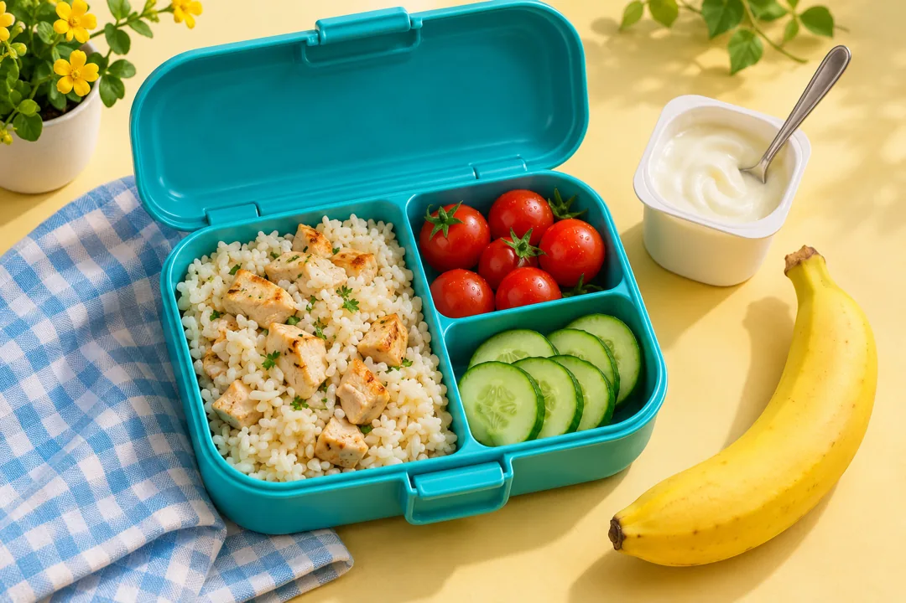

Listen first, then record your turn.
Grade 2 English Monday’s lesson
Why is food
important?
Read about apples and onions, solve the food puzzles, then tell your class how food helps you.

Student’s Book · Pages 52–53
Grade 2 English Monday’s lesson
Read about apples and onions, solve the food puzzles, then tell your class how food helps you.

Student’s Book · Pages 52–53
Listen first, then record your turn.